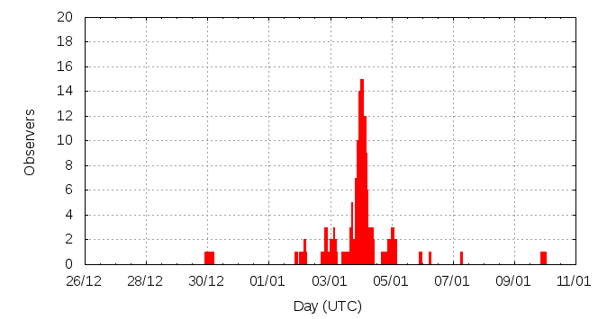

[ www.imo.net ]
This page shows automated results of the Quadrantids 2011, based on visual observations by volunteers astronomers collected through the report form of the International Meteor Organization (IMO). The information on this page is generated automatically; for scientific use please refer to manual analyses published in scientific journals (such as WGN). Send your feedback regarding this page to Geert Barentsen.
Page contents:
Page generated: 2011 March 26 at 18:53 UTC.
The graph below shows the ZHR (Zenithal Hourly Rate), which is the number of meteors an observer would see under a very dark sky with the radiant of the shower in zenith.
ZHRmax = 90 based on 1969 Quadrantids reported in 264 intervals, assuming population index r = 2.1

| Time (UTC) | Solarlon | nINT | nQUA | ZHR | Particle density | |
|---|---|---|---|---|---|---|
| 2010-12-30 01:22 | 278.069 | 6 | 3 | 1 | ±0 | 2 / 109·km3 |
| 2011-01-02 02:19 | 281.168 | 3 | 9 | 8 | ±3 | 14 / 109·km3 |
| 2011-01-02 22:49 | 282.039 | 7 | 10 | 9 | ±3 | 15 / 109·km3 |
| 2011-01-03 03:26 | 282.235 | 10 | 19 | 8 | ±2 | 14 / 109·km3 |
| 2011-01-03 13:21 | 282.656 | 5 | 20 | 19 | ±4 | 32 / 109·km3 |
| 2011-01-03 17:50 | 282.847 | 11 | 23 | 34 | ±7 | 58 / 109·km3 |
| 2011-01-03 21:30 | 283.003 | 10 | 40 | 65 | ±10 | 111 / 109·km3 |
| 2011-01-03 22:35 | 283.048 | 13 | 103 | 90 | ±9 | 153 / 109·km3 |
| 2011-01-03 23:42 | 283.096 | 17 | 93 | 69 | ±7 | 118 / 109·km3 |
| 2011-01-04 00:41 | 283.138 | 24 | 234 | 63 | ±4 | 107 / 109·km3 |
| 2011-01-04 01:51 | 283.187 | 29 | 265 | 69 | ±4 | 118 / 109·km3 |
| 2011-01-04 02:51 | 283.230 | 33 | 333 | 74 | ±4 | 126 / 109·km3 |
| 2011-01-04 03:50 | 283.271 | 35 | 428 | 73 | ±4 | 124 / 109·km3 |
| 2011-01-04 04:46 | 283.311 | 25 | 272 | 62 | ±4 | 106 / 109·km3 |
| 2011-01-04 06:47 | 283.396 | 7 | 20 | 60 | ±13 | 102 / 109·km3 |
| 2011-01-04 07:40 | 283.435 | 4 | 27 | 58 | ±11 | 99 / 109·km3 |
| 2011-01-04 09:41 | 283.520 | 4 | 19 | 36 | ±8 | 61 / 109·km3 |
| 2011-01-04 20:19 | 283.971 | 7 | 21 | 19 | ±4 | 32 / 109·km3 |
| 2011-01-05 01:03 | 284.173 | 7 | 24 | 13 | ±3 | 22 / 109·km3 |
| 2011-01-05 03:07 | 284.261 | 1 | 5 | 13 | ±5 | 22 / 109·km3 |
| 2011-01-05 23:08 | 285.111 | 1 | 1 | 6 | ±4 | 10 / 109·km3 |
| 2011-01-07 06:58 | 286.463 | 3 | 0 | 7 | ±7 | 12 / 109·km3 |
| 2011-01-09 22:45 | 289.172 | 2 | 0 | 2 | ±2 | 3 / 109·km3 |
The reported intervals are automatically added together into the bins shown above, based on the number of meteors and the distribution of the intervals. For each bin, the following parameters are computed:
Data has been received from 48 observers in 20 countries. Thank you for your efforts!
Note: click on the map for an interactive version.

| Observer | Country | Teff | nQUA |
|---|---|---|---|
| Salvador Aguirre | Mexico | 0.20h | 5 |
| Hamed Altafi | Iran | 2.66h | 52 |
| Elena Barsky | Israel | 1.33h | 17 |
| Suresh Bhattarai | Nepal | 1.50h | 16 |
| Jens Briesemeister | Germany | 1.00h | 19 |
| Jakub Cerny | Czech Republic | 0.92h | 49 |
| Daniel Cosovanu | Romania | 2.00h | 29 |
| Anderson Dantas | Brazil | 1h | 1 |
| Mark Davis | United States | 2.04h | 15 |
| Chander Devgun | India | 1.20h | 41 |
| Dariusz Dorosz | Poland | 0.75h | 26 |
| Christoph Gerber | Germany | 0.67h | 3 |
| William Godley | United States | 1.50h | 9 |
| Sylvie Gorkova | Czech Republic | 1.00h | 4 |
| Vilem Heblik | Czech Republic | 3.80h | 37 |
| Kamil Hornoch | Czech Republic | 6.62h | 228 |
| Petr Horalek | Czech Republic | 6.00h | 216 |
| Karoly Jonas | Hungary | 5.18h | 158 |
| Javor Kac | Slovenia | 3.00h | 228 |
| Stanislav Korotkiy | Russia | 1.48h | 31 |
| Jakub Koukal | Czech Republic | 23.87h | 271 |
| Roman Kovalyk | Italy | 1.37h | 16 |
| Jens Lacorne | France | 1.88h | 0 |
| Peter Van Leuteren | Netherlands | 1.77h | 5 |
| Anna S. Levina | Israel | 1.83h | 39 |
| Simon Levin | Israel | 1.67h | 38 |
| Alexandr Maidik | Ukraine | 1.00h | 3 |
| Qiang Ma | China | 1.00h | 26 |
| Mikhail Maslov | Russia | 1.00h | 14 |
| Bruce Mccurdy | Canada | 3.00h | 33 |
| Fabrizio Melandri | Italy | 0.75h | 15 |
| Koen Miskotte | Netherlands | 5.20h | 28 |
| Sven Nather | Germany | 5.52h | 10 |
| Artyom Novichonok | Russia | 0.62h | 3 |
| Hamed P. Khorsandi | Iran | 2.66h | 75 |
| Constantin Psenitchi | Romania | 0.83h | 6 |
| Ella Ratz | Israel | 1.83h | 35 |
| Jurgen Rendtel | Germany | 5.44h | 23 |
| Wesley Stone | United States | 1.53h | 26 |
| Richard Taibi | United States | 1.00h | 6 |
| István Tepliczky | Hungary | 3.25h | 84 |
| Bing Wang | China | 0.58h | 2 |
| William Watson | United States | 1.99h | 3 |
| Thomas Weiland | Austria | 5.35h | 188 |
| Xiaofan Wei | China | 1.70h | 19 |
| Oliver Wusk | Germany | 2.33h | 12 |
| Weizhou Zeng | China | 1.10h | 24 |
| Xiang Zhan | China | 0.72h | 7 |
Create your own analysis. The files below can be opened using Excel:
qua2011_rate.csv (number of meteors per interval per observer)
qua2011_magn.csv (number of meteors per magnitude bin per observer)
The information on this page may be distributed freely provided credit is given to the International Meteor Organization (IMO) and, when possible, to the individual observers. The computer facilities to generate this page are provided by ESA/RSSD and Armagh Observatory.
References: